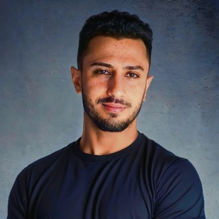

BIM-based structural optimization
Dynamo visual programming drives parametric model generation, FEM in Robot Structural Analysis, metaheuristic optimization, First-Order Reliability Method checks, and life cycle assessment in one workflow.
PhD Candidate · Digital Engineering and Construction
PhD candidate at KIT building AI-driven BIM workflows: Sketch-to-BIM, Scan-to-BIM, structural optimization.
Karlsruhe Institute of Technology (KIT)
Institute of Technology and Management in Construction (TMB)

I am a doctoral candidate and research assistant in Digital Engineering and Construction at KIT's Institute of Technology and Management in Construction (TMB), supervised by Prof. Reza Maalek. My work sits at the intersection of Building Information Modeling (BIM), structural engineering, and artificial intelligence.
My research combines BIM and visual programming (Dynamo) with finite element analysis, metaheuristic optimization, reliability analysis, and life cycle assessment. On this foundation I develop Sketch-to-BIM workflows that turn hand sketches, speech, and text into optimized parametric models, and Scan-to-BIM methods that align point clouds and panoramas with BIM. Before joining KIT in 2024, I completed an MSc at Karadeniz Technical University (thesis research at KIT) and a BSc at Sakarya University, both in Civil Engineering.
Three connected lines of work, all built on one BIM-centred workflow in Dynamo.
Dynamo visual programming drives parametric model generation, FEM in Robot Structural Analysis, metaheuristic optimization, First-Order Reliability Method checks, and life cycle assessment in one workflow.
Feature extraction from hand sketches, and more recently speech and text, to automatically generate and optimize BIM models with deep learning and skeletonization.
Automatic point-cloud-to-BIM alignment, semantic 3D reconstruction from registered point clouds and 360° panoramas, and AR-UWB sensor fusion for stable positioning on site.
Applied Sciences, 15(3), 1025DOI
Incorporates uncertainty and reliability constraints into BIM-based structural design optimization by combining Dynamo parametric truss generation, the First-Order Reliability Method, an FEM-based limit state function, and metaheuristic algorithms, with model creation in Robot Structural Analysis.
Buildings, 14(6), 1532DOI
Integrates Dynamo visual programming, Robot Structural Analysis FEM, genetic algorithm optimization, Revit model transfer, and LCA into a single BIM-based truss optimization workflow, connecting structural efficiency with sustainability assessment.
Creative Construction Conference 2025DOI
Presents an end-to-end workflow that transforms hand-sketched truss designs into optimized BIM-based structural models using deep-learning feature extraction, a sketch application linked to Dynamo, parametric generation and optimization, and Robot Structural Analysis validation.
ICEARC 2025DOI
Compares Harris corner detection, skeletonization, heat-map techniques, and deep learning-based extraction for recognizing nodes and elements in truss sketches, evaluating accuracy and execution time trade-offs as the foundation for automated truss generation in Dynamo.
IASS Symposium 2024
Embeds metaheuristic optimization into a BIM-based visual programming workflow for spatial truss design, extending the optimization line from planar benchmark trusses toward spatial structures and design exploration.
ICEARC 2023DOI
Develops an AI-assisted method for aligning point clouds to BIM coordinates in regular rectangular buildings using Bayesian optimization for neighborhood definition, PCA normal estimation, genetic algorithm-based main-axis estimation, and rigid body transformation, supporting scan/BIM comparison and construction monitoring.
SSRN preprintLink
Unifies sketch, speech, and text inputs into one AI-driven BIM design automation and optimization workflow, using skeletonization with Bisecting K-Means for sketch processing and Dynamo/Revit/Robot Structural Analysis model generation. Demonstrated on truss benchmark optimization and architectural energy optimization.
Manuscript (conference paper)
Proposes a semantic Scan-to-BIM workflow that combines SAM3-based object detection, panorama pose registration, 3D line detection and classification, and semantic point projection to convert registered reality-capture data into parametric Revit elements via Dynamo.
Karlsruhe Institute of Technology (KIT), Institute of Technology and Management in Construction (TMB) · Karlsruhe, Germany
Karlsruhe Institute of Technology (KIT), Digital Engineering and Construction · Karlsruhe, Germany
Sakarya University of Applied Sciences, General Directorate of Construction · Sakarya, Türkiye
Python tools built outside the doctoral work.
Flask-based assistant for CPM/AON scheduling diagrams, Monte Carlo simulation, and AI-powered guidance.
Converts text-based flow definitions into PowerPoint flowcharts with decision, branch, and merge logic, automatic layout with collision handling, a desktop interface, and a standalone Windows executable.
Open to conversations about digital construction, BIM automation and applied AI research.
feyzullah.yavan@kit.edu